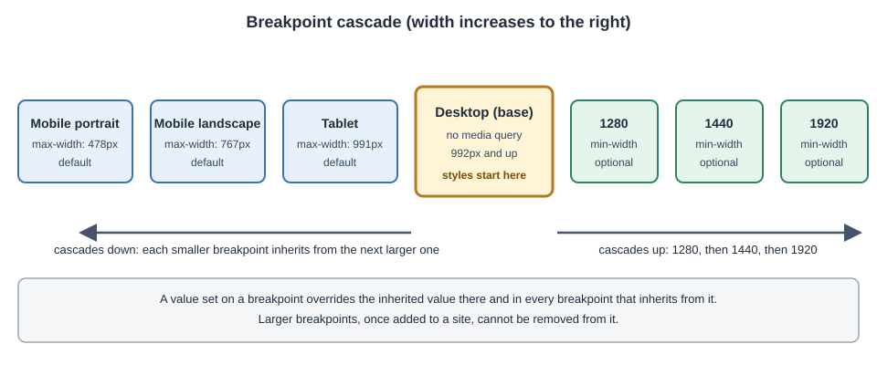

Responsive Design and Breakpoints
|
This content was generated with the assistance of AI and should be verified against the official documentation before being relied on in production. |
This page describes the responsive tools of the Webflow Designer as they were on 2026-10-28, the date on which their
facts were checked against the official documentation. Webflow is a hosted service without version numbers, so the
behaviour below is dated rather than versioned, and changes are announced at Webflow
updates; the Product Changes and Deprecations page tracks
what has changed. Breakpoints are available on every plan, including the free Starter Site plan, so every step on
this page can be tried without paying. Plans are named by tier only and no prices are quoted. The developer example uses
the Designer API typings package @webflow/designer-extension-typings 2.2.2.
Responsive design means that one page adapts to the width of the screen that shows it. In plain CSS this is done with media queries, as described in CSS Variables and Media Queries. Webflow does not hide that mechanism: it gives it a visual form. Each breakpoint in the top bar of the Designer is a media query, each style edited while a breakpoint is selected is a rule inside that query, and the Style panel shows which values are inherited from another breakpoint and which are overrides.
The running example is the Fernbrook Gardens site, a fictitious botanical garden. The page follows one job: making the Home page of Fernbrook readable on a phone. The hero section has a large heading, a three-column row of feature cards (Visit, Plants and Events) and a navigation bar with seven links. On a wide screen this layout is fine; on a phone the heading overflows, the cards are too narrow to read and the navigation does not fit.
The model in one paragraph
Webflow is desktop-first with a bidirectional cascade. The Desktop breakpoint is the base: a style set there has no
media query and applies at every width. Three smaller breakpoints (Tablet, Mobile landscape and Mobile portrait)
inherit from Desktop and from each other going down, and are written as max-width queries. Three optional larger
breakpoints (1280, 1440 and 1920) inherit from Desktop going up and are written as min-width queries. A style set on a
breakpoint overrides the inherited one on that breakpoint and on every breakpoint that inherits from it.

The figure is an original schematic and does not reproduce the Designer.
The breakpoints
| Breakpoint | Width | Media query written | Inherits from | Present by default |
|---|---|---|---|---|
Desktop (base) |
992 px and above in practice, no limit |
none: the base rule |
none |
yes |
Tablet |
991 px and below |
|
Desktop |
yes |
Mobile landscape |
767 px and below |
|
Tablet |
yes |
Mobile portrait |
478 px and below |
|
Mobile landscape |
yes |
1280 |
1280 px and above |
|
Desktop |
no, added on demand |
1440 |
1440 px and above |
|
1280 when present, else Desktop |
no, added on demand |
1920 |
1920 px and above |
|
1440 when present, else Desktop |
no, added on demand |
Three facts in the table are the ones that trip people up.
-
The Desktop breakpoint has no width of its own. It is "everything wider than 991 px" until a larger breakpoint takes over. When the canvas shows Desktop, its frame is as wide as the Designer window allows, and dragging the canvas edge changes what you see, not what is stored.
-
The widths are fixed. The thresholds 991, 767 and 478 pixels, and 1280, 1440 and 1920 pixels, are chosen by Webflow. A site cannot move them or add a seventh breakpoint. A design that needs a break at 1100 pixels has to express it with a different technique, such as a flexible layout (see Flexbox and Grid Layouts) or a fluid size (see below).
-
A larger breakpoint cannot be removed. Once 1280, 1440 or 1920 has been added to a site it stays, and the Designer warns about this when the breakpoint is added. Add one only when the design really needs different values at that width.
The internal identifiers that the Designer API uses for the same breakpoints are tiny (Mobile portrait), small
(Mobile landscape), medium (Tablet), main (Desktop), large (1280), xl (1440) and xxl (1920). They appear
in the API for variable modes and for the breakpoint-change event, and are shown in the extension example at the end
of this page.
The base breakpoint and the cascade
Down-cascade
Styles flow from a wider breakpoint to the next narrower one. Setting the Fernbrook hero heading to 64 pixels on Desktop makes it 64 pixels on Tablet, Mobile landscape and Mobile portrait too, until one of them overrides it. The override on Tablet is inherited by the two mobile breakpoints, so a heading set to 44 pixels on Tablet is 44 pixels on both phones unless Mobile landscape or Mobile portrait sets its own value.
This is exactly CSS inheritance through source order: the rule for max-width: 991px appears after the base rule and,
having the same specificity, wins at every width up to 991 pixels. The max-width: 767px rule comes later still and
wins at the narrower widths. Webflow writes the queries in that order on purpose, from the widest query to the
narrowest.
Up-cascade
The larger breakpoints work the other way round. They are min-width queries layered on top of the base rule, and
each inherits from the previous smaller one. A heading set to 64 pixels on Desktop and to 80 pixels on 1440 is 64 pixels
between 992 and 1439 pixels and 80 pixels from 1440 pixels up, including at 1920 pixels unless that breakpoint
overrides it.
A value set on 1280 is inherited by 1440 and 1920, but it is not inherited by Desktop: the up-cascade never writes back down. This asymmetry is the reason to design on Desktop first and add larger breakpoints last: the base values are shared by the whole site, and the larger breakpoints only refine them.
What the base means for a design
Because every style is written on the Desktop base first, the working method is:
-
Build the structure and the styles at Desktop. Choose the values that should apply to most widths.
-
Switch to Tablet and fix only what breaks. Whatever still looks right is left alone, so it stays inherited.
-
Switch to Mobile landscape and Mobile portrait and fix only the remaining problems.
-
If the design has to grow on very wide screens, add 1280, 1440 or 1920 and change only the values that need it.
Each override is a separate rule that must be maintained, so fewer overrides mean a smaller style sheet and a site that is easier to change. A design where the Mobile portrait breakpoint repeats every value of Desktop is a sign that the base was set up wrongly or that the overrides were made without reading the inherited values first.
A consequence that surprises people who know mobile-first CSS: the smallest screen is the last one in the cascade, not
the first. Webflow cannot be made mobile-first with the default breakpoints, because the base has no query and the
smaller breakpoints use max-width. The up-cascade options give a partial mobile-first approach only for enlarging
layouts on very wide screens. The two approaches are compared in CSS
Variables and Media Queries.
The generated media queries
The Fernbrook feature-card row is a Grid with three columns on Desktop. The table of what each edit writes follows the Designer actions in order.
/* Set while Desktop is selected: no media query */
.feature-grid {
display: grid;
grid-template-columns: 1fr 1fr 1fr;
grid-column-gap: 24px;
grid-row-gap: 24px;
}
/* Set while Tablet is selected */
@media screen and (max-width: 991px) {
.feature-grid {
grid-template-columns: 1fr 1fr;
}
}
/* Set while Mobile landscape is selected */
@media screen and (max-width: 767px) {
.feature-grid {
grid-template-columns: 1fr;
grid-row-gap: 16px;
}
}
/* Set while Mobile portrait is selected */
@media screen and (max-width: 478px) {
.feature-grid {
grid-row-gap: 12px;
}
}Four points explain what Webflow wrote.
-
Only the changed properties are in each query. The Mobile portrait rule does not repeat
grid-template-columnsbecause the single column is inherited from Mobile landscape. -
The class is the same in every rule. Breakpoints change the value of a property for a class, not which class an element has, so no HTML changes between widths.
-
All the queries use the media type
screen. Printing the page uses the base rules, so a printed Fernbrook page looks like the Desktop design. -
Webflow orders the queries so that the cascade described above holds without extra specificity: the base rules first, then the larger breakpoints, then the smaller ones from the widest to the narrowest.
An element that is not styled through a class (a tag selector such as body) follows the same rules. A combo class
(feature-grid plus is-compact, see
Classes, Combo Classes and Selectors) produces its own
compound selector inside the same media queries, for example .feature-grid.is-compact inside the Tablet query.
Per-breakpoint overrides
Reading what is inherited
The Style panel reports where each value comes from. The colour of the property label (and of the field the label belongs to) tells whether the value is set on the current breakpoint or inherited from another one. A value with a blue label is set on the selected class at the current breakpoint, and a value with an orange label is inherited from a different breakpoint. Colour conventions can change in a Designer update, so use the legend that the Designer shows when you hover over a label rather than relying on this paragraph.
Clicking the label offers Clear, which removes the value set on this breakpoint. After clearing, the value is inherited again from the wider breakpoint. This is the safe way to undo a mistaken override: delete the override, not retype the value inherited from the parent.
| Label | Meaning | Typical action |
|---|---|---|
Set on this breakpoint |
The value is stored in a media query for this breakpoint |
Keep it, or clear it to inherit |
Inherited from a wider breakpoint |
The value comes from a wider query or the base |
Leave it, or override it |
No label |
Not set anywhere |
Browser default applies |
On a page that looks wrong at one width, selecting the element at that breakpoint and scanning the labels is the quickest way to find the cause. The method comes from the Webflow by Example book (Packt, 2021), which presents it as "base breakpoint first, then read the inherited values"; the method is unchanged, but the labels and the panels around them differ from the 2021 Designer.
An override that only applies to one breakpoint
The cascade means that a Tablet override also applies to the two phone breakpoints. If the Fernbrook heading should be 44 pixels on Tablet but 36 pixels on Mobile landscape and 30 pixels on Mobile portrait, set 44 on Tablet, 36 on Mobile landscape and 30 on Mobile portrait. If only Tablet should be different, set the value on Tablet and then re-set the Desktop value on Mobile landscape, so the narrower widths do not inherit the Tablet value; this explicit re-setting is one reason to keep the number of overrides small.
Overriding with a combo class
Sometimes one variation of an element needs a responsive change that the shared class must not have. A combo class
holds the exception: the compact feature card gets is-compact and the override is made on the combo class at the
breakpoint. The base class stays unchanged, and the exception is written once.
Where to put an override
A responsive fix belongs on the shared class when every element that uses the class has the same problem. It belongs on a combo class when one use case has it. It belongs on the Body tag selector when it is a site-wide default, for example a smaller base font size on phones. Putting it on a single element’s class by mistake is the commonest source of "I fixed it here and it broke over there" in Webflow.
Hiding and showing elements
Webflow hides an element at a breakpoint with the Display: None setting in the Layout section of the Style panel. Selecting the element, switching to the breakpoint and choosing Display: None writes a rule inside that media query.
.nav-link-secondary {
display: block;
}
@media screen and (max-width: 767px) {
.nav-link-secondary {
display: none;
}
}Because the setting cascades down, Display: None set on Tablet also hides the element on both phone breakpoints, and setting Display back to Block on Mobile landscape shows it again. The Fernbrook navigation uses it twice: the seven text links are hidden on Mobile landscape and below, and the Navbar’s menu button (which is visible only below Tablet) takes their place.
Hiding has consequences that are easy to forget.
-
The element is still in the HTML. Display: None removes it from layout and from the accessibility tree, but the markup is downloaded. Hiding a large image on phones does not save the download; the browser may still fetch it depending on how the image is loaded, so choose a different image on small screens with a background image or with a responsive-image approach rather than hiding one of two copies. See Images and Assets and Native HTML Images and Lazy Loading.
-
Duplicated content costs SEO and accessibility. Two copies of a menu, one for each width, mean two sets of links in the document. Prefer one element restyled at each breakpoint. See Accessibility.
-
Hidden is not the same as conditionally rendered. A Collection List item or a block hidden with conditional visibility (see Conditional Visibility and Dynamic Embeds) is decided by data and removed from the output; Display: None is decided by width and stays in the output.
-
Interactions and scripts still see the element. A script that looks for the element finds it even when it is invisible.
An element hidden at the current breakpoint is still listed in the Navigator, so a "missing" element can be found and restored without searching the canvas.
Layout that adapts without overrides
A good responsive Webflow site needs fewer breakpoint overrides because the layout adapts by itself. Three techniques cover most cases.
Flexible and wrapping layouts
A Flex container with wrap enabled moves items to the next line when they no longer fit, and a Grid with
repeat(auto-fit, minmax(240px, 1fr)) columns creates as many columns as fit, with no media query at all. The
Fernbrook feature-card row could use the second form and need no overrides.
.feature-grid {
display: grid;
grid-template-columns: repeat(auto-fit, minmax(240px, 1fr));
grid-column-gap: 24px;
grid-row-gap: 24px;
}The cost is control: the browser decides when to wrap, so the column count at 768 pixels can be two or three depending on the card width. When the design needs exactly three, two and one columns at known widths, use explicit breakpoint overrides as in the earlier example. The decision is discussed in Flexbox and Grid Layouts.
Relative sizes and maximum widths
A container that has a maximum width and a width of 100 percent shrinks on narrow screens without a media query.
Percent, rem, vw and fr units adapt; fixed pixels do not. The Webflow Container element has a maximum width of
940 pixels by default and shrinks below that. See The Style Panel and
the Box Model for the units.
Fluid sizes with clamp()
clamp() lets one declaration produce a value that grows with the viewport between a minimum and a maximum. It is the
way to get the smooth type scale that a series of breakpoint overrides can only approximate in steps.
.heading-hero {
/* never below 2rem, never above 4rem, scaling with the viewport in between */
font-size: clamp(2rem, 1.2rem + 3.2vw, 4rem);
line-height: 1.1;
}
.section-padding {
padding-top: clamp(3rem, 2rem + 4vw, 7rem);
padding-bottom: clamp(3rem, 2rem + 4vw, 7rem);
}Webflow’s Style panel accepts a clamp() expression, or calc(), min() and max(), typed into a size field after
selecting the custom value option, and it writes the expression verbatim into the stylesheet. Two cautions apply.
-
The middle term needs a relative part. A
clamp()with a purevwmiddle value can ignore the user’s font-size preference, becausevwdoes not scale with it. Mixing in arempart, as in1.2rem + 3.2vwabove, keeps some of the preference. -
The Designer canvas follows the frame width. The canvas computes
vwagainst the frame of the selected breakpoint, so a fluid heading that looks right in the Desktop frame can differ when the frame is dragged narrower. Test in Preview, not only on the canvas.
The same technique, with variables, is the topic of the next section.
Size variables and breakpoint modes
A size variable stores a length: a heading size, a section’s padding, a gap. When a size variable is applied to a
property, the property uses var() and the value comes from the active mode. A variable collection can have a Base
mode and any number of additional modes. A mode can be manual, switched by applying it to an element or a page, or
automatic, tied to a breakpoint, in which case it applies at that breakpoint’s width. Each collection allows one
automatic mode per breakpoint.
Applied to the Fernbrook hero, a collection named Type scale holds the heading size. The Base mode is Desktop:
| Variable | Base (Desktop) | Tablet mode | Mobile landscape mode | Mobile portrait mode |
|---|---|---|---|---|
|
4rem |
3rem |
2.5rem |
2rem |
|
3rem |
2.25rem |
2rem |
1.75rem |
|
7rem |
5rem |
4rem |
3rem |
Creating a mode in the Variables panel, picking the breakpoint and editing that column gives the same cascade as a style: a mode starts with the Base mode’s values, and values set on a larger breakpoint’s mode cascade down to the smaller ones. So an unset Mobile landscape value is the Tablet value. Webflow writes the result as custom properties redeclared inside media queries.
:root {
--size-heading-xl: 4rem;
--size-section-padding: 7rem;
}
@media screen and (max-width: 991px) {
:root {
--size-heading-xl: 3rem;
--size-section-padding: 5rem;
}
}
@media screen and (max-width: 767px) {
:root {
--size-heading-xl: 2.5rem;
--size-section-padding: 4rem;
}
}
@media screen and (max-width: 478px) {
:root {
--size-heading-xl: 2rem;
--size-section-padding: 3rem;
}
}
.heading-hero {
font-size: var(--size-heading-xl);
}
.section-padding {
padding-top: var(--size-section-padding);
padding-bottom: var(--size-section-padding);
}Source: Webflow Help Center: Variables
The names above are written for readability; Webflow generates its own custom property names from the collection and variable names, so the generated CSS differs in naming but not in structure.
The practical gain is that the class no longer carries any breakpoint override: .heading-hero uses the variable at
all widths, and the type scale for the whole site is changed in one place. This is the main reason to build the
responsive scale as variables rather than as per-class overrides. See Variables
and Modes for the variable types, aliases and function variables, and
Typography and Fonts for the type scale itself.
A variable can also hold a clamp() expression, as a function variable or as a custom size value. A single fluid
variable replaces four mode values, at the cost of less precise control at each width. A common compromise is a fluid
type scale in variables and breakpoint modes only for the paddings and gaps that must jump at known widths.
One caveat reported by site owners: modes tied to breakpoints work on Webflow hosting, where the platform serves the generated stylesheet; a site exported as code and hosted elsewhere must carry the same stylesheet and scripts, or the mobile breakpoints can keep the Desktop values. See Code Export and Portability.
Testing at breakpoints
The Designer offers four ways to check a responsive design, from fastest to most realistic.
-
Switch the breakpoint buttons in the top bar and look at the canvas. The frame width of each breakpoint is its upper limit, so the frame is at the widest point of that breakpoint, not the narrowest.
-
Drag the edge of the canvas on any breakpoint to see widths between the fixed ones. The drag only changes the frame; it does not create a breakpoint. Dragging near the thresholds (991, 767 and 478 pixels) shows where the layout changes.
-
Preview mode renders the page without the Designer chrome, runs interactions and custom code, and keeps the breakpoint buttons, so a menu that opens only with a script can be tried at each width.
-
Real devices and browser tools. Publish to the
webflow.iostaging domain and open the page on a phone, or use the browser’s device mode. Only a real device shows the effect of touch, of the address bar changing the viewport height, of font rendering and of the safe area on devices with a notch.
The breakpoint canvas announced at Webflow Conf 2026 (1 to 3 September 2026) lets the canvas show several breakpoints side by side, so one change can be judged at different widths at once. It is rolled out gradually, so a site can still show the single-frame canvas.
A short checklist for the Fernbrook Home page, from the widest breakpoint down:
-
No horizontal scroll bar at any width. A single element with a fixed pixel width wider than the screen is the usual cause.
-
Text at least 16 pixels on phones, with enough line height.
-
Tap targets at least 44 by 44 pixels, with space between them.
-
The heading and the image keep a good relation after wrapping.
-
The images load at a suitable size (see Performance Optimization).
-
Forms are usable with the on-screen keyboard.
-
Contrast stays acceptable on every background, including hover states that do not exist on touch screens.
Detecting the breakpoint in a Designer Extension
A Designer Extension, a small app that runs inside the Designer, can follow the breakpoint the person has selected. The
Designer API publishes a mediaquery event whose callback receives one of the identifiers listed earlier.
import type { BreakpointId } from "@webflow/designer-extension-typings";
// webflow is the global provided by the Designer API to an extension
const unsubscribe = webflow.subscribe("mediaquery", (breakpoint: BreakpointId) => {
switch (breakpoint) {
case "main":
console.log("Desktop base breakpoint selected");
break;
case "medium":
console.log("Tablet selected");
break;
case "small":
case "tiny":
console.log("A mobile breakpoint is selected");
break;
default:
console.log(`Another breakpoint is selected: ${breakpoint}`);
}
});
// stop listening, for example when the extension panel closes
unsubscribe();The event only reports the selection; it is a convenience for tools such as a style-audit app that highlights overrides for the active width. It does not change the page. The extension model is described in Designer Extensions and the Designer API.
Responsive images, video and embeds
Breakpoints change styles, not the files an element loads, so images need their own care.
-
An Image element in Webflow gets a responsive
srcsetandsizesautomatically, so the browser fetches a smaller file on a phone. Thesizesvalue follows the width the image is set to in the Style panel. See Images and Assets. -
A background image is one file at every width. A different crop for phones requires a different element or class, not only a breakpoint override of the property, because the override can swap the image URL but a Designer-managed background image is chosen once in the panel.
-
Embedded video and
iframeelements need an aspect ratio and a maximum width of 100 percent to avoid overflowing. The Video element handles this; a Code Embed needs the CSS written by hand. See Custom Code in the Head, Footer and Embeds. -
Sliders, Tabs and the Navbar have their own breakpoint behaviour: the Navbar’s menu button shows below a chosen breakpoint, and the Slider’s arrows and nav dots follow the element’s own settings. Check them at every width.
Compared with the Webflow by Example method
Chapter 6 of Ali Rushdan Tariq’s Webflow by Example (Packt, 2021) teaches responsive design by setting up the base breakpoint first, adjusting the layout at each smaller breakpoint and reading the inherited values in the Style panel. The method is sound and remains the right order of work. Three details of the book are outdated or must be read with care.
-
The 1440 base. The book works with a Desktop canvas treated as 1440 pixels wide. In the current Designer the base Desktop breakpoint has no fixed width, and 1440 pixels is an optional larger breakpoint that, once added, cannot be removed. Design on the base, not on a 1440 frame, and add 1440 only when wide screens need different values.
-
The labels and panels. The 2023 redesign of the Designer moved the breakpoint buttons and reorganised the right-hand panel; the inherited-value indicators exist in a new form. See Designer Tour.
-
No variables or fluid scale. The book has no variable modes, and the fluid
clamp()approach and breakpoint modes in this page are later tools.
See Where Older Books and Tutorials Are Outdated for the full list. The book can be found at Packt: Webflow by Example.
A worked pass over the Fernbrook Home page
The numbers below show a complete responsive pass, with the breakpoint at which each edit is made.
-
Desktop. The hero heading uses the variable
size-heading-xlof 4rem. The feature row is a three-column Grid. The navbar shows seven text links. -
Tablet. The Tablet mode of the Type scale collection reduces the heading to 3rem and the section padding to 5rem. The grid becomes two columns. The navbar still shows the links, with a smaller gap.
-
Mobile landscape. The grid becomes one column. The seven links are hidden with Display: None and the menu button is visible. The Mobile landscape mode reduces the heading to 2.5rem.
-
Mobile portrait. Only the padding and the row gap change. The heading is 2rem. Everything else is inherited from Mobile landscape.
-
1920 (optional). A maximum width is set on the hero container so text lines do not become too long on large monitors. Nothing is changed on 1280 or 1440; those breakpoints are not added.
The result is three media queries for the grid, one for the navbar, three modes for the variables and no override on the hero heading class itself. The same page built with per-class overrides would need about nine rules for the same effect.
Common mistakes
-
Setting a value on Mobile portrait and expecting it on Tablet. The cascade only goes down from Desktop and up to the larger breakpoints. A Mobile portrait value never reaches Tablet.
-
Fixing a problem with an override instead of finding the fixed pixel width that caused it. Use the inherited labels and the Navigator to find it.
-
Adding 1280, 1440 and 1920 "just in case". They cannot be removed, and each one adds a layer of overrides to maintain.
-
Hiding duplicated content for each width instead of restyling one element.
-
Using
vwwithout arempart for text, which disregards the reader’s font-size setting. -
Testing only on the canvas. The canvas is accurate for layout but not for touch, scripts that run only in Preview or on the published site, or the browser’s viewport height.
-
Overriding a combo class on a breakpoint and forgetting the base class that the same element also has, so the override appears not to apply because a more specific rule wins elsewhere.
Summary
-
Desktop is the base and has no media query; Tablet, Mobile landscape and Mobile portrait are
max-widthqueries of 991, 767 and 478 pixels; 1280, 1440 and 1920 are optionalmin-widthqueries that cannot be removed once added. -
Styles cascade down from Desktop and up to the larger breakpoints. An override applies to its breakpoint and every breakpoint that inherits from it.
-
The Style panel marks where every value comes from; clear an override to inherit again.
-
Hide with Display: None, remembering that the element is still in the markup.
-
Prefer layouts and fluid sizes (
clamp(),fr,auto-fit) that need no override, and keep the responsive scale in size variables with breakpoint modes. -
Test with the breakpoint buttons, the dragged canvas, Preview mode and real devices.